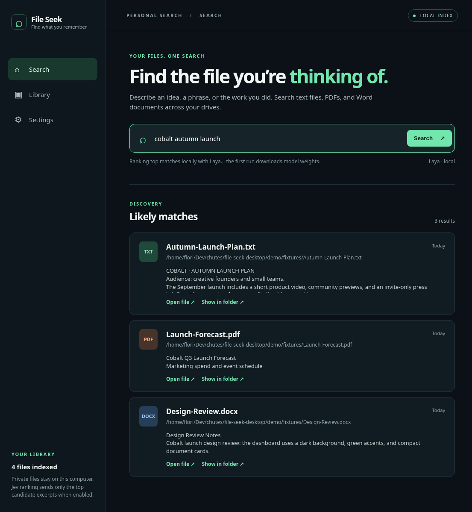
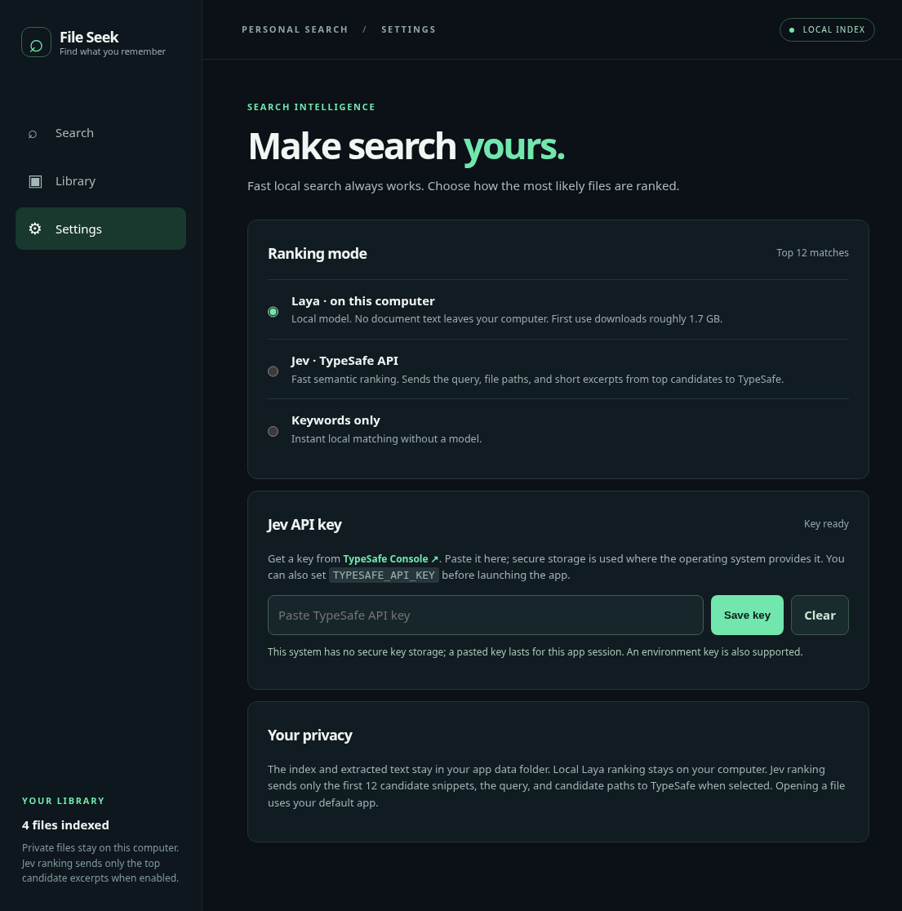

Search for the idea you remember, across the documents you forgot where you saved.
A local index keeps repeat searches quick.
Matching files appear first. Laya then refines the shortlist on your computer.


Point your coding agent at the repo. Install it, add your drives, and open File Seek from your desktop.